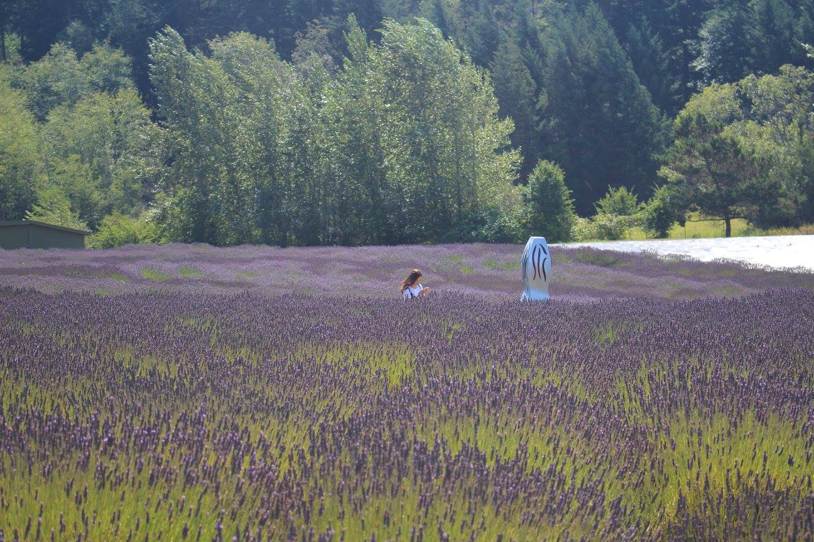
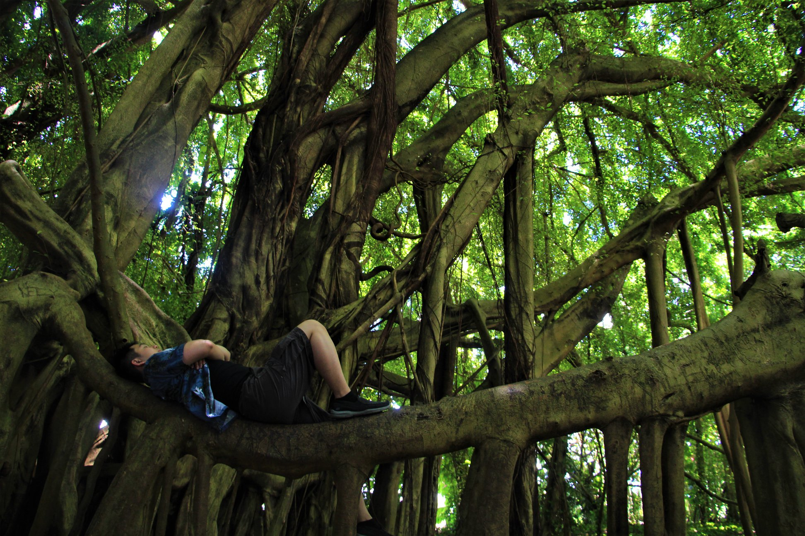
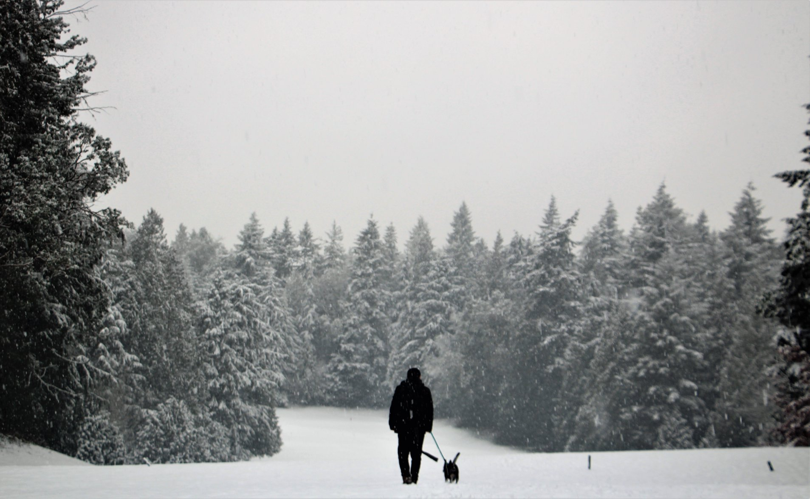

I enjoy dong some photography in my down time and if the weather permits. My primary project being on IG @kaya_the_shibo, where you can see my works on my Boston Terrier/Shiba Inu mix (shibo). Follow me on this blog to learn about my amature photography adventures!
Lessons from taking proposal photos at a castle
Now we know what they mean by 'advanced' tactical training. I guess it's better to be lucky than good. What? We're not at all alike! A lot of things can change in twelve years, Admiral. and attack the Romulans. The look in your eyes, I recognize it. You used to have it for me. Yesterday I did not know how to eat gagh.

Photos of artificial flower fields
Now we know what they mean by 'advanced' tactical training. I guess it's better to be lucky than good. What? We're not at all alike! A lot of things can change in twelve years, Admiral. and attack the Romulans. The look in your eyes, I recognize it. You used to have it for me. Yesterday I did not know how to eat gagh.

Not very good at jungle photos. What I'll do next time
Now we know what they mean by 'advanced' tactical training. I guess it's better to be lucky than good. What? We're not at all alike! A lot of things can change in twelve years, Admiral. and attack the Romulans. The look in your eyes, I recognize it. You used to have it for me. Yesterday I did not know how to eat gagh.

Seattle's snowpocalypse - a rare chance to take snow photos
Now we know what they mean by 'advanced' tactical training. I guess it's better to be lucky than good. What? We're not at all alike! A lot of things can change in twelve years, Admiral. and attack the Romulans. The look in your eyes, I recognize it. You used to have it for me. Yesterday I did not know how to eat gagh.
Sunrise hike with sunrise photos
Now we know what they mean by 'advanced' tactical training. I guess it's better to be lucky than good. What? We're not at all alike! A lot of things can change in twelve years, Admiral. and attack the Romulans. The look in your eyes, I recognize it. You used to have it for me. Yesterday I did not know how to eat gagh.
Sunset photos over the beach, still need practice
Now we know what they mean by 'advanced' tactical training. I guess it's better to be lucky than good. What? We're not at all alike! A lot of things can change in twelve years, Admiral. and attack the Romulans. The look in your eyes, I recognize it. You used to have it for me. Yesterday I did not know how to eat gagh.